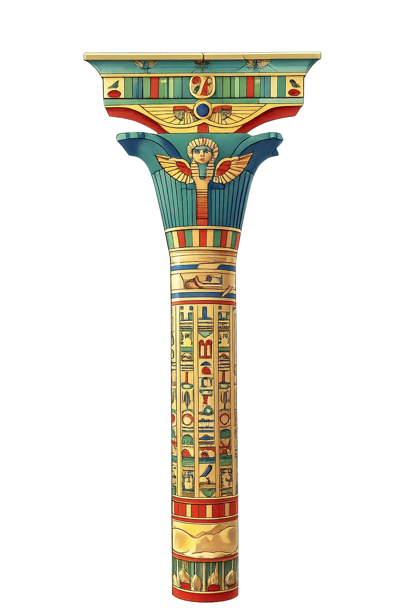
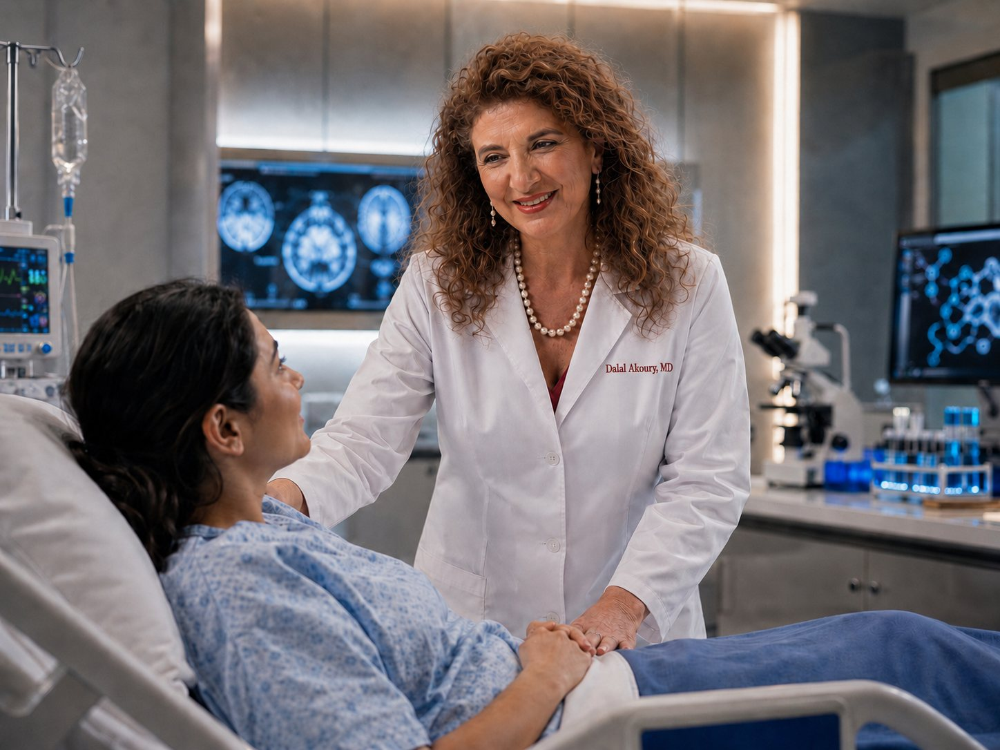
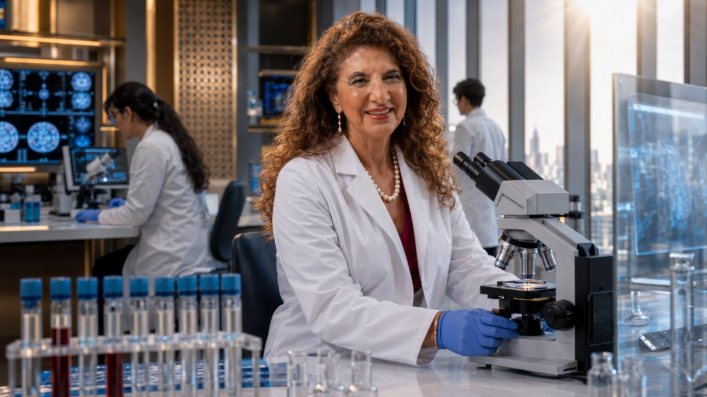
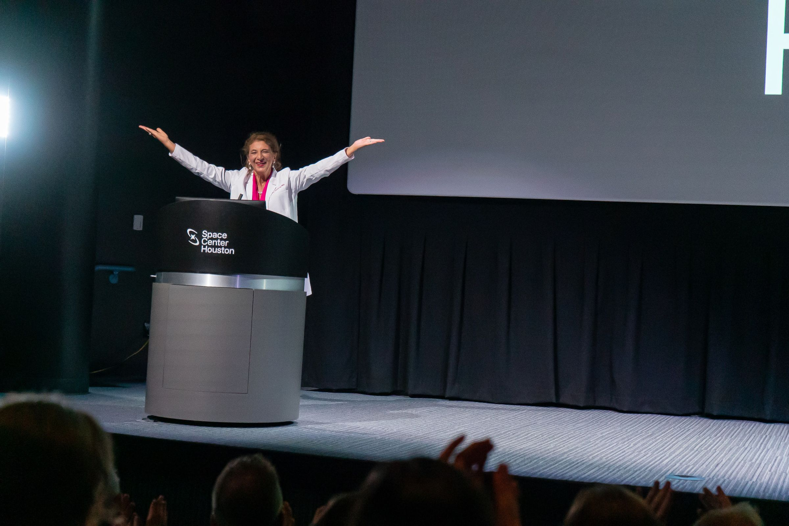
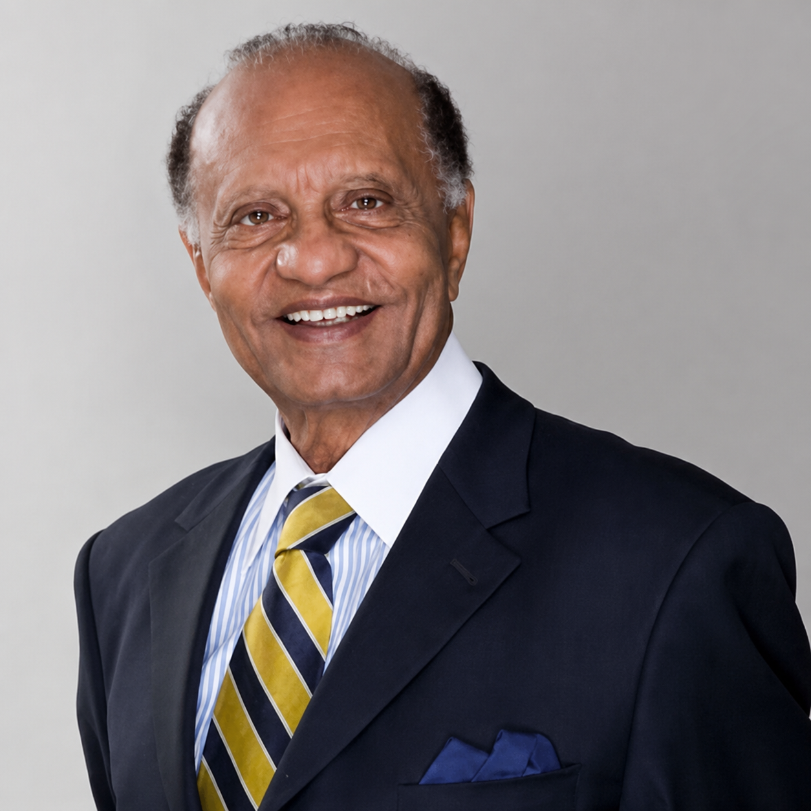
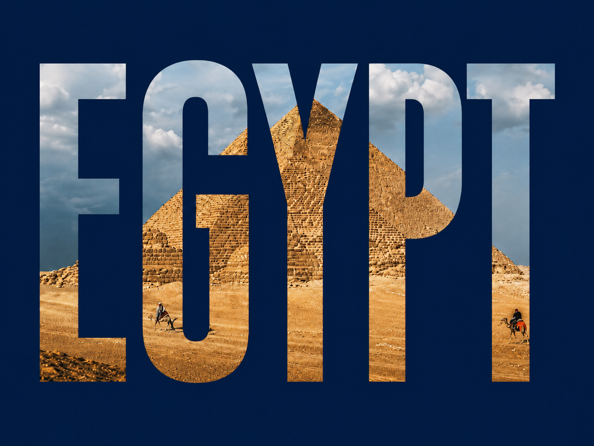
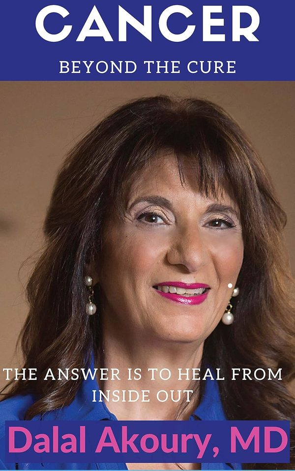
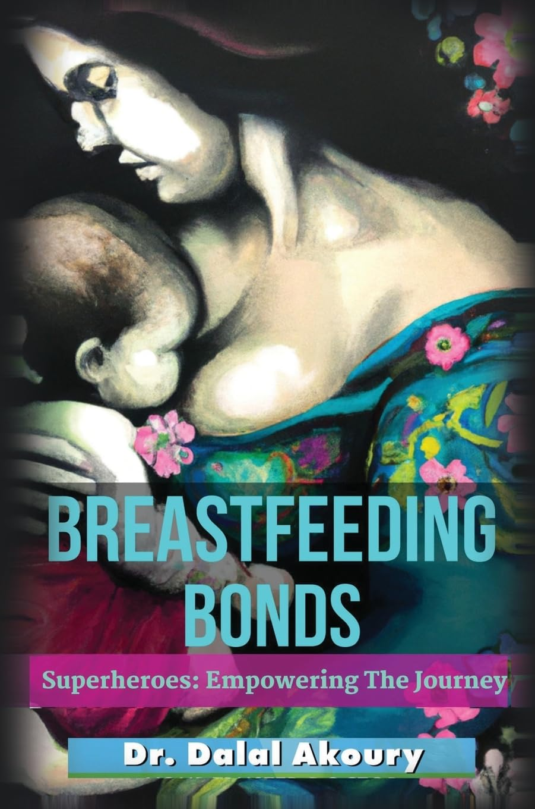
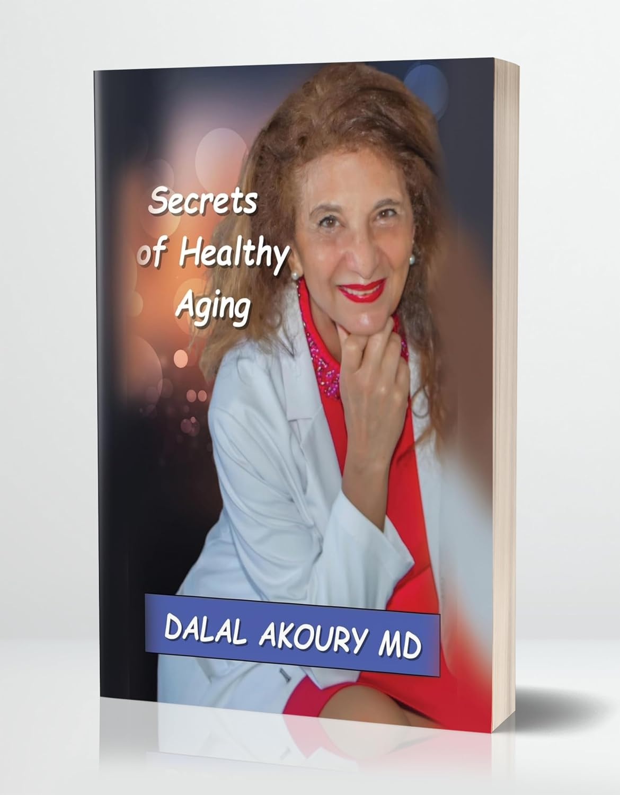

Dr. Dalal Akoury Returns to Egypt — with Forty Years of Medicine, Leadership and Global Vision
After more than four decades devoted to medicine, research, education, entrepreneurship and whole-person healing in the United States, Dr. Dalal Akoury is bringing a lifetime of experience and relationships home — connecting healthcare with education, innovation and opportunity built on trust.
If you believe Egypt’s greatest opportunities will be built by bringing the right people, knowledge and resources together, Dr. Akoury invites you to discover where your experience may fit.

She left Egypt to learn from the world. She returns because what she learned belongs, in part, to the country that formed her.

This Vision Was Never Meant to Be Built by One Person
Dr. Akoury is not returning to Egypt with a finished blueprint and all the answers. She is returning with experience, relationships and a willingness to listen — to physicians, educators, entrepreneurs, developers, innovators and Egyptians throughout the world who believe that meaningful progress begins with the right conversation.
Her role is not simply to present a vision. It is to help bring together people whose knowledge, values and capabilities may complement one another.
Some will bring medical expertise. Some will bring technology, education, land, development experience, hospitality, relationships or the means to help. Others will bring a deep understanding of Egypt and the communities any worthwhile initiative must serve.
Meet Dr. Akoury
“I am not returning to Egypt because I believe one person can transform a country. I am returning because I have spent a lifetime seeing what becomes possible when the right people trust one another, share what they know and build around a purpose larger than themselves.
Egypt gave me my beginning. America gave me the chance to learn, practice, teach and build. This chapter is about bringing those worlds together — and listening for what Egypt needs now.”
Sometimes the most important work begins when two people who should know one another finally meet.
She Never Left Egypt Behind
Egypt remained present in Dr. Akoury’s faith, resilience, ambition, family values and belief that medicine must serve the whole human being. Her life in America expanded her knowledge and relationships, but it never erased where her story began.
Her return to engage with Egypt is not nostalgia. It is not retirement. It is not merely a symbolic visit. It is the beginning of a legacy chapter — the convergence of identity, experience and responsibility.

What Can Forty Years of Global Experience Bring Home?
Medical Experience
More than four decades across medicine — including oncology, research, emergency care, pediatrics and whole-person healthcare.
Healthcare Systems Thinking
Experience building an approach that examines how disease, metabolism, nutrition, hormones, immunity, environment, psychology and lifestyle interact.
Medical Education
A commitment to educating physicians, practitioners, patients and healthcare entrepreneurs.
Entrepreneurial Experience
Experience creating clinical, educational and business platforms — not merely practicing within an existing institution.
International Relationships
Connections across medicine, education, entrepreneurship, investment and international leadership.
Egyptian Identity
A personal understanding of Egyptian culture, talent and resilience — and of the opportunity created when local leadership connects with global resources.
Who Is Dr. Akoury Hoping to Meet?
This vision grows through people. You may recognize yourself in one of these — and if you do, there may be a place for you in the conversation.
Physicians & Healthcare Leaders
If you are working to improve care, train clinicians or build more connected healthcare systems, there may be meaningful ground to explore together.
Universities & Researchers
If you see opportunities for education, research, faculty exchange or international collaboration, Dr. Akoury welcomes the conversation.
Entrepreneurs & Technology Leaders
If you are building responsible solutions in AI, digital health, diagnostics, education or patient engagement, Egypt may be a powerful place to collaborate.
Egyptians Around the World
If Egypt remains part of your identity and you have knowledge, relationships or experience you want to bring home, this invitation is also for you.
Young Egyptian Physicians & Founders
If you are building the future from within Egypt, Dr. Akoury wants not only to speak, but to listen.
Strategic Connectors
If you know people who should be in the same room but have not yet met, you may help create the relationship that changes what becomes possible.
A Path That Circled the World and Led Home
Where the story begins
Born and formed in Alexandria — the roots of faith, resilience and ambition.
Medical education & the move to America
Foundational medical education, and the journey to the United States to train at the frontier of American medicine.
Pediatrics, oncology & research
Training in pediatrics and pediatric hematology/oncology, and academic and laboratory research.
From frontline care to whole-person medicine
Broad clinical practice across emergency and general medicine — and the turn toward integrative, functional, whole-person approaches.
Founding AWAREmed — and returning home to Egypt
Establishing AWAREmed and educating a new generation — and now bringing four decades of experience and relationships home.
A Career Built Across the Full Continuum of Human Health
Dr. Akoury’s perspective is unusually broad — spanning acute care and prevention, the very young and the aging, the molecular and the whole person. That breadth is what allows her to think in systems rather than single specialties.



Pediatrics, Oncology & Research
Early training in pediatrics and pediatric hematology/oncology, and academic and laboratory research into the science of disease.
Emergency & Clinical Medicine
Frontline experience across acute and general care — the broad clinical grounding of a four-decade career.
Integrative & Functional Medicine
Root-cause, systems-based, regenerative and metabolic approaches — with integrative oncology support that complements, never replaces, conventional care.
Longevity & Addiction Medicine
Evidence-conscious healthy aging and longevity, and a clinical interest in addiction medicine and the neurobiology of recovery.
Whole-Person & Complex Care
Care for layered, long-term conditions that rarely fit one specialty — body, mind and spirit, tailored to the individual.
Emerging and integrative approaches are described here as areas of practice and interest, not as universally proven or guaranteed. Individual needs and outcomes vary.
The Legacy That Shaped My Vision
Dr. Fouad Ghaly — The Egyptian Physician Who Inspired My Journey



Every great journey begins because someone inspires us to dream.
Before I became a physician, there was one person I admired deeply — my older cousin, Dr. Fouad Ghaly. As a young girl growing up in Alexandria, Egypt, I watched him leave Egypt to pursue medicine in the United States. He went on to build a distinguished career and became known for his work in regenerative medicine, longevity, innovative patient care, and physician education.
Long before others knew his accomplishments, I knew him as my cousin — the charismatic physician whose courage, vision, and ambition showed a young Egyptian girl that medicine could become more than a profession. It could become a calling.
Decades later, a conversation with him about the emerging field of anti-aging and regenerative medicine helped change the direction of my own career. His example encouraged me to pursue advanced education in functional medicine, longevity, regenerative medicine, and integrative care.
Dr. Ghaly’s influence reminds me that the vision of one physician can reach far beyond a single practice. It can shape another physician, another generation, and another future.
Great physicians do more than heal patients. They inspire other physicians to dream bigger.
Dr. Fouad Ghaly inspired mine.
A Legacy Across Generations
-
1960s
An Egyptian physician begins an international journey
Dr. Fouad Ghaly leaves Egypt to continue his medical path in the United States.
-
1978
Another physician emerges from Alexandria
Dr. Dalal Akoury completes her medical education at Alexandria University and begins building her own path.
-
2008
A conversation changes a career
A conversation with Dr. Ghaly introduces Dr. Akoury more deeply to the possibilities of anti-aging, functional, longevity, and regenerative medicine.
-
Today
Knowledge returns home
Dr. Akoury is working to connect global expertise, healthcare innovation, education, investment, and visionary leadership with Egypt’s future.
Egypt has produced physicians whose influence has reached the world. Dr. Fouad Ghaly was one of them. I hope my work represents another chapter in that tradition — bringing knowledge, innovation, collaboration, and hope back to the country where my own journey began.
Throughout his career, Dr. Ghaly moved comfortably among leaders in medicine, business, culture, and public life, reflecting his remarkable ability to connect people across disciplines and borders.
The inspiration began with one Egyptian physician who dared to dream beyond borders. Today, that inspiration continues through a larger mission: connecting Egypt’s extraordinary talent with global medicine, technology, education, and investment.
Explore the Vision for Egypt
Healthcare Is the Foundation — But the Opportunity Is Much Larger
Her Egypt vision begins with medicine, but it does not end there. It connects care with the systems, industries and relationships that let progress endure — each area reinforcing the others. These are illustrative of these fields, not depictions of finalized projects.
Healthcare & Medical Education
Centers of excellence, prevention, integrative oncology, longevity, physician training and university collaboration.
Illustrative — an area of vision.Technology & Entrepreneurship
AI, digital health and telehealth — and support for physicians and founders building ethical, sustainable ventures.
Illustrative — an area of vision.Wellness Tourism & Hospitality
Connecting Egypt’s heritage, geography and hospitality with responsible, high-quality wellness programs and destinations.
Illustrative — an area of vision.Real Estate & Economic Development
Health-centered campuses and destinations, and conversations that convene leaders, developers and responsible partners.
Illustrative — an area of vision.These are areas of vision and exploration — not representations that any specific project has been funded, approved, endorsed or launched.
What Could We Explore Together?
No single project defines this vision. The first purpose is simpler and more human: to find aligned people, understand real needs, and explore where complementary strengths might lead to something worth building. Each of these is a starting point for a conversation — not a finished or funded project.
Physician Education & Clinical Training
Sharing knowledge and raising clinical capability together — including integrative oncology education.
I work in this area — start a conversation →Healthcare & Longevity Centers
Whole-person, preventive and longevity-focused models of care.
I work in this area — start a conversation →Medical & Wellness Tourism
Pairing Egypt’s hospitality and heritage with high-quality care.
I work in this area — start a conversation →AI-Enabled Health & Education
Technology that extends access, learning and better decisions.
I work in this area — start a conversation →University & Research Collaborations
Faculty exchange, joint research and shared programs.
I work in this area — start a conversation →Healthcare Real Estate & Wellness Destinations
Campuses, hospitality and destinations designed around health and human performance.
I work in this area — start a conversation →Not One Clinic — an Ecosystem of Ideas, Education and Care
Dr. Akoury arrives not with an idea alone, but with an operating ecosystem spanning care, education and practice development. Three highlights:
The whole-person integrative care center Dr. Akoury founded — created to treat the person rather than the diagnosis alone.
An institute focused on advancing integrative medical knowledge and training practitioners in whole-person methods.
An educational and practice-development program helping physicians and health entrepreneurs build ethical, organized, sustainable practices.
A Life’s Work That Can Be Examined
Authority should be verifiable. Explore Dr. Akoury’s published books, peer-reviewed work, professional profile and the ecosystem she built.

CANCER: Beyond the Cure
Cancer is an unwelcome guest — but it doesn’t have to be a stranger. This book faces cancer head-on: understanding its power, its history (dating back to ancient Egypt), and its nature, so you can meet the enemy on your own terms. Because the spirit prepares the mind, the mind prepares the way, and the body follows. Knowledge isn’t just power here — it’s survival.

Breastfeeding Bonds Superheroes
Every mother who breastfeeds is a superhero, and Dr. Dalal Akoury proves it. In Breastfeeding Bonds Superheroes, she fuses science with heart, revealing the extraordinary power packed into breast milk and the unbreakable bond it forges between mother and child. Part guide, part rallying cry, this book empowers mothers to own their journey — one superheroic feed at a time.

Secrets of Healthy Aging
People are living longer, but living well takes more than luck. Secrets of Healthy Aging shows how functional medicine, root-cause healing, and the body’s own power to repair itself are rewriting the rules of longevity. Because 70 is the new 50, and everyone deserves copies for themselves and the people they love.
The Authority Is Professional. The Mission Is Deeply Personal.
Behind the credentials is a complete human being: Egyptian-born and America-shaped; a wife and mother; a woman of faith; an immigrant who built something of her own; a physician, founder, educator and mentor; someone who has known illness from the patient’s side as well as the physician’s; and, above all, a listener — an advocate for the body, the mind and the spirit together.
She often reflects that more than forty years have taught her how illness changes a person, a family and sometimes an entire future — and that real progress requires more than medicine. It requires education, systems, relationships, courage and people willing to build together. Egypt gave her a beginning; she now hopes the experience of a lifetime can contribute to its future.
Relationships Built Across a Lifetime in Medicine and Enterprise
Over her career, Dr. Akoury has developed relationships across many worlds — a network she now brings to bear on Egypt’s opportunity.
Connecting Egypt with Global Entrepreneurs and Strategic Leaders
Among Dr. Akoury’s long-standing international relationships is her connection with entrepreneur, speaker and business strategist JT Foxx. Their relationship spans approximately fifteen years and is grounded in trust, shared conversations and mutual respect. They are exploring how international relationships and strategic dialogue may help introduce qualified leaders to opportunities connected with Egypt.
This describes an exploratory relationship only. It does not represent a formal partnership, a committed investment, an endorsement of any specific opportunity, a finalized agreement, or any expectation of returns.

Could Your Experience Become Part of Egypt’s Next Chapter?
Whether you bring medical knowledge, educational leadership, technology, development experience, hospitality, the means to help, local understanding or an international relationship, the first step is not a commitment. It is a thoughtful conversation.
You do not need to arrive with a formal proposal. Tell us who you are, what you care about and what you believe may be possible.
Begin With a Conversation
Tell us a little about yourself and why Egypt’s future matters to you. Dr. Akoury’s team will review each thoughtful inquiry and respond when there appears to be meaningful alignment.